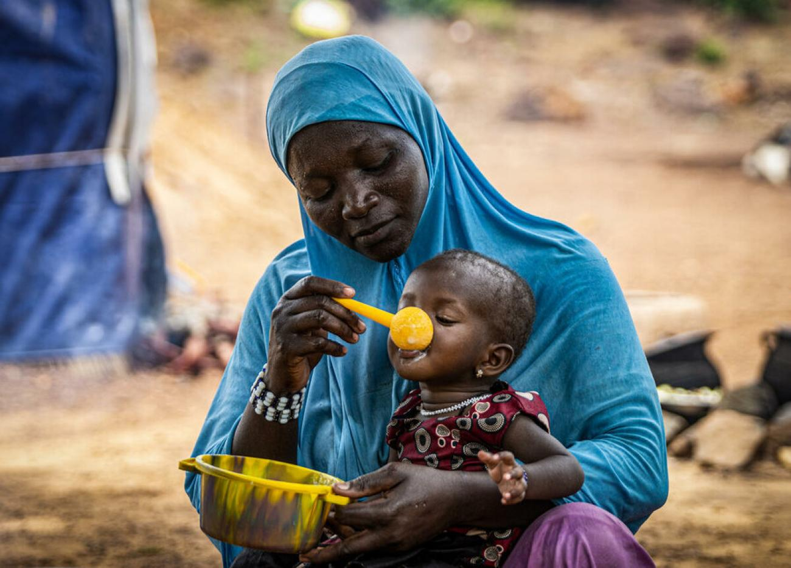
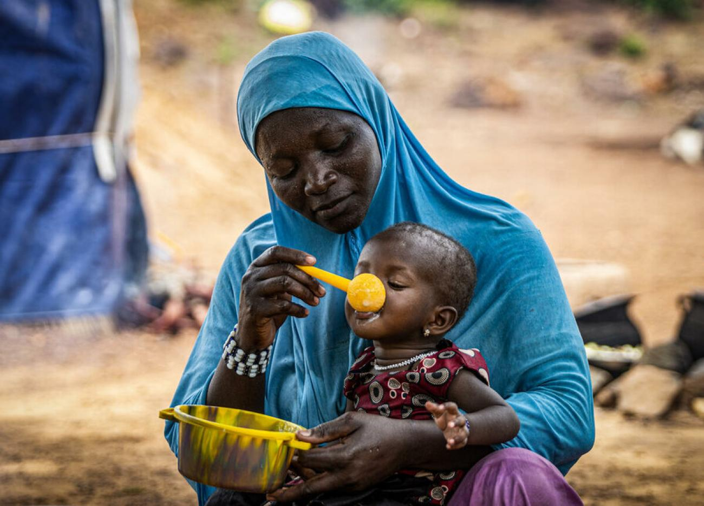
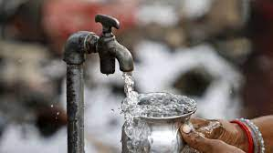

.jpg)
Significance and Targets of No Poverty
- Eradicate extreme poverty
- Reduce poverty by at least 50%
- Implement social protection systems
- Equal rights to ownership, basic services, technology and economic resources
- Build resilience to environmental, economic and social disasters
Current Global Status
- By the end of 2022: 8.4 per cent of the world’s population,as many as 670 million people, could still be living in extreme poverty.
- In sub-Saharan Africa: An estimated 7% of the global population around 575 million people could still find themselves trapped in extreme poverty by 2030.
Challenges
 

Progress has been limited in other regions, such as South Asia and sub-Saharan Africa, which account for 80 percent of those living in extreme poverty.
- Climate change
- Conflict and food insecurity
Mean even more work is needed to bring people out of poverty
Potential Solution

- Equality and representation for all
- Increase access to education
- Improve food security and access to clean water
- End war and conflict